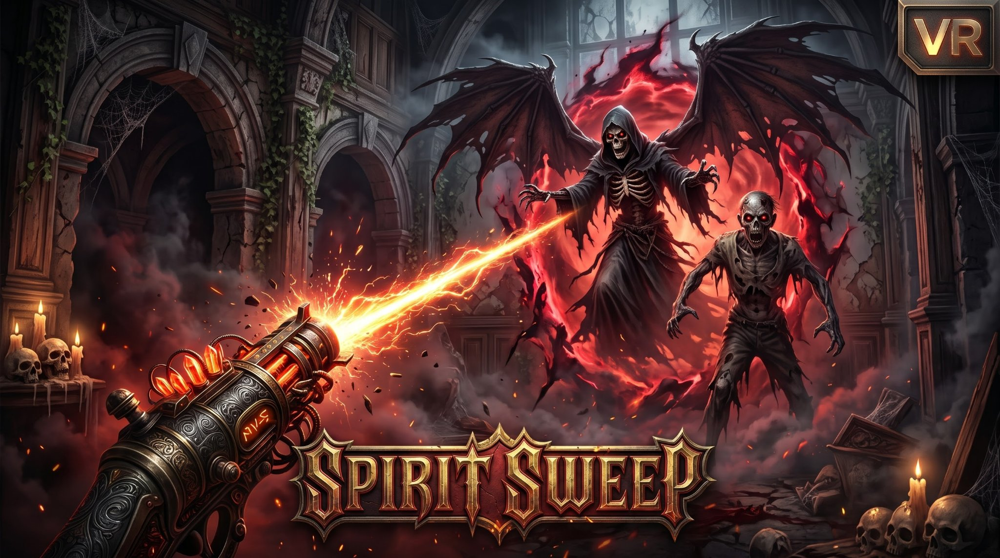

PixelFalconVR is a VR company crafting original virtual reality games — built for Meta Quest, designed to be felt in your hands.
Browse gamesTwo original titles, both live now on Meta Quest.
Neon Katana is a VR rhythm game for Meta Quest 2 and Quest 3: slice neon blocks to the beat with dual glowing katanas, climb D-to-SSS ranks, and face neon ronin in parry-and-counter duels. If you came here looking for games like Beat Saber on Quest, Neon Katana is the katana-slicing entry in that family — the same slicing joy, with its own mechanics: an iaijutsu draw-slash where the blade rests sheathed until the beat tells you to draw.
Every PixelFalconVR title is an original — no clones, no ports of flat-screen ideas. Follow the news page for launch updates and dev notes on what comes next.

Spirit Sweep VR is our second game: a first-person ghost-hunting VR horror game for Meta Quest. Wield the Spirit Sweeper, banish 16 undead spirit types across 3 haunted zones and 10 exorcism missions, and defeat the Boss Housekeeper in the finale. If you like Phasmophobia or Ghostbusters VR, this is the ghost-cleaning entry in that family — built for standalone Quest, no PC required.
Honest round-ups to help you pick what to play next.
PixelFalconVR is a VR company crafting original virtual reality games.
We're an independent VR game studio. We design for the medium — games that only make sense with your hands in the world, not ports of flat-screen ideas. Our debut title Neon Katana, a VR rhythm game of katana slicing and neon duels, is live now on the Meta Horizon Store. Our second title, Spirit Sweep VR, a ghost-hunting horror game, is live now too.
Original virtual reality games for Meta Quest. Neon Katana, a VR rhythm game of katana slicing and neon duels, and Spirit Sweep VR, a ghost-hunting horror game, are both live now on the Meta Horizon Store.
Same genre, own identity: slicing targets to the beat with glowing blades, plus iaijutsu draw-slashes, neon ronin parry-and-counter duels, and D-to-SSS ranks.
Right here — the news page carries launch updates and dev notes, and the studio posts on X and YouTube.
Press, players, partners — we'd love to hear from you.
Contact us: pixelfalconvr@gmail.com
Follow us: X (Twitter) · YouTube · Meta Horizon Store